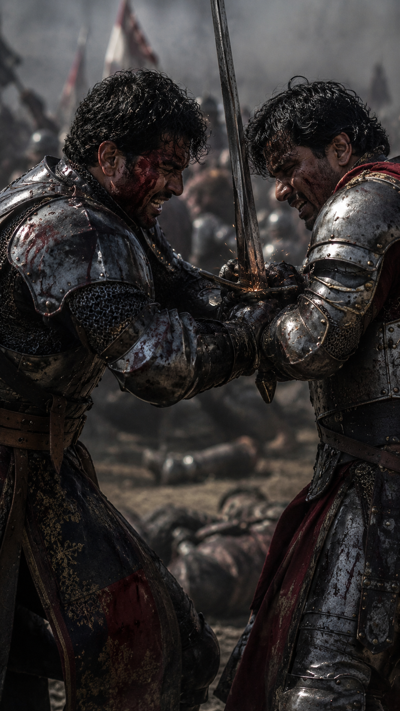
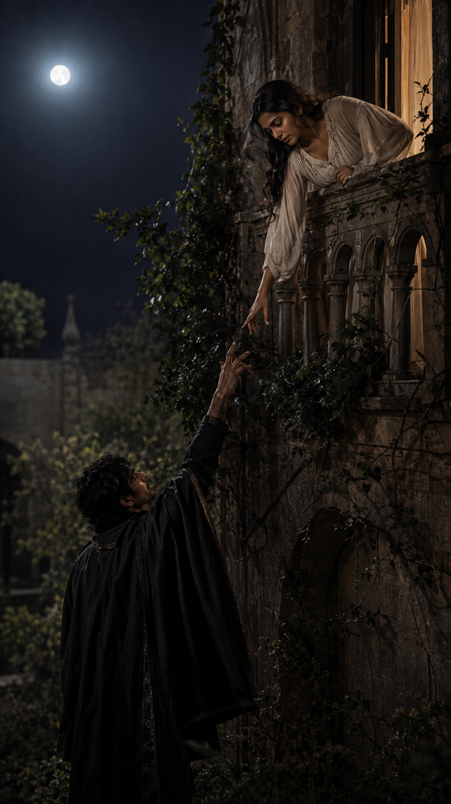
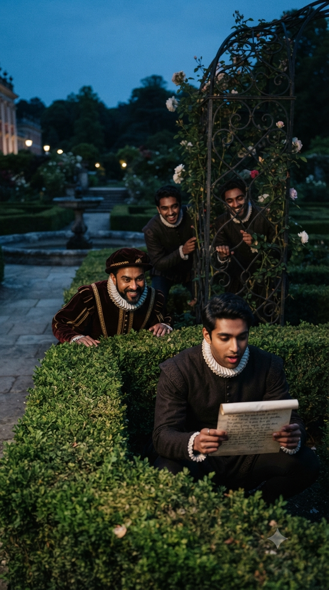
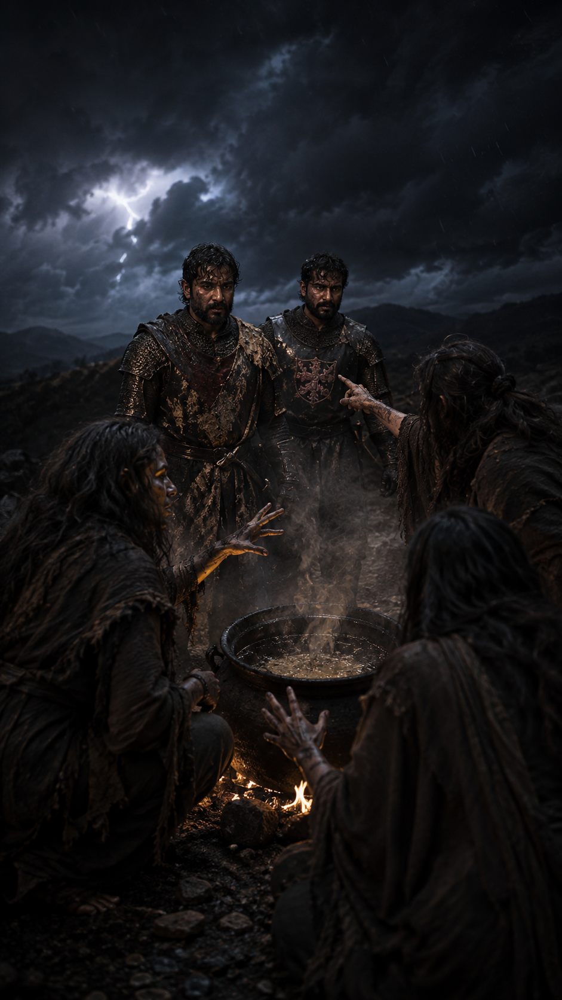
Every play is a masterclass in English — hiding inside a story you'll actually want to read.
Grammar drills fade from memory. Stories don't. Each of Shakespeare's 37 plays is retold here in plain, powerful English — built to sharpen your vocabulary, your sentence sense, and your instinct for how a story is built, one page at a time.
This isn't Shakespeare translated into boredom. It's ambition, love, betrayal, and forgiveness, still asking the same questions four centuries later — and a way into English that teaches you to write, not just to memorise.
Every great writer started as a reader. Let's begin your story.
Contact Dr. Samudra Dasgupta directly
Setup a virtual meetingLearn English · Debate · Creative Writing · Impromptu Speech
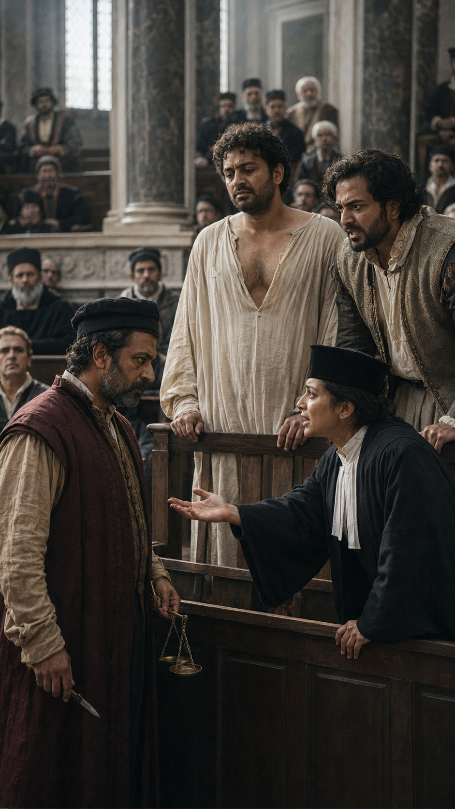
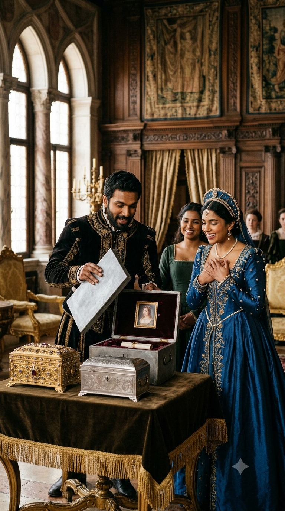
The Merchant of Venice
“Portia: The quality of mercy is not strain'd. It droppeth as the gentle rain from heaven upon the place beneath.” (Act IV, Scene I)
A merchant with more generosity than cash borrows money from a moneylender he has long despised and publicly humiliated. The moneylender sets a strange condition: if the loan isn't repaid on time, he gets to cut a pound of flesh from the merchant's own body. It sounds like grim banter between old enemies — until a shipping disaster wipes out the merchant's fortune and the deadline arrives with nothing to repay it.
Offered triple the money instead, the moneylender refuses every substitute and demands exactly what was promised: flesh, not gold. In court it looks hopeless, until a young woman disguised as a legal scholar turns his own contract against him with one devastating technicality — the bond permits flesh, but not one drop of blood. The tables flip instantly: the man demanding mercy moments earlier is now denied it himself, stripped of his fortune and forced to abandon his faith.
Woven through this is a quieter, warmer plot about love and trust, carried by that same young woman, who outsmarts every man in the room while disguised as one. The play unsettles modern readers because its "villain" is a man mocked and spat on for his religion long before he turns vengeful, and the text never lets you forget who wronged whom first. At its core, it's a study of how ordinary people justify cruelty: nearly everyone insists they're only asking for what's fair. It also asks whether the law is a fixed, neutral thing, or just a weapon that rewards whoever reads the fine print more cleverly. Four centuries on, it still lands hard because Shakespeare refuses to give you a clean hero to root for.
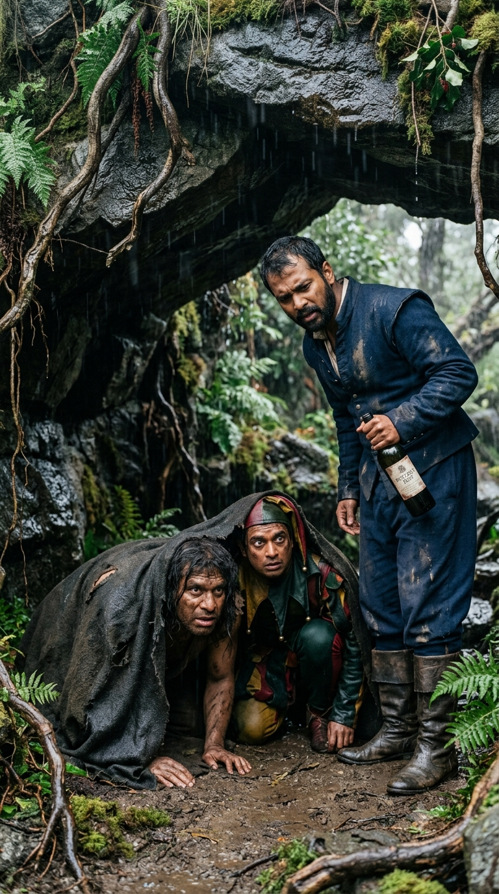
The Tempest
“Prospero: We are such stuff as dreams are made on, and our little life is rounded with a sleep.” (Act IV, Scene I)
A duke who was betrayed and exiled by his own brother years earlier has been living on a remote island ever since, quietly mastering magic with only his daughter, a spirit servant, and a native inhabitant for company. When the ship carrying his old enemies happens to sail near the island, he conjures a violent storm and strands them all on shore, finally holding real power over the people who once destroyed his life.
Instead of using that power for revenge, he spends the rest of the play testing everyone: putting his daughter's suitor through hard labor to prove his love is real, letting the schemers plot against him just to watch who they really are. Every thread of the plot is really a rehearsal for the same choice, made over and over — forgive, or destroy.
In the end he chooses forgiveness, frees the spirit who served him, gives up his magic entirely, and prepares to return home and simply be an ordinary old man again. It's widely read as Shakespeare's own farewell to his art, and its real subject is what power is worth once you've finally gotten the chance to use it.
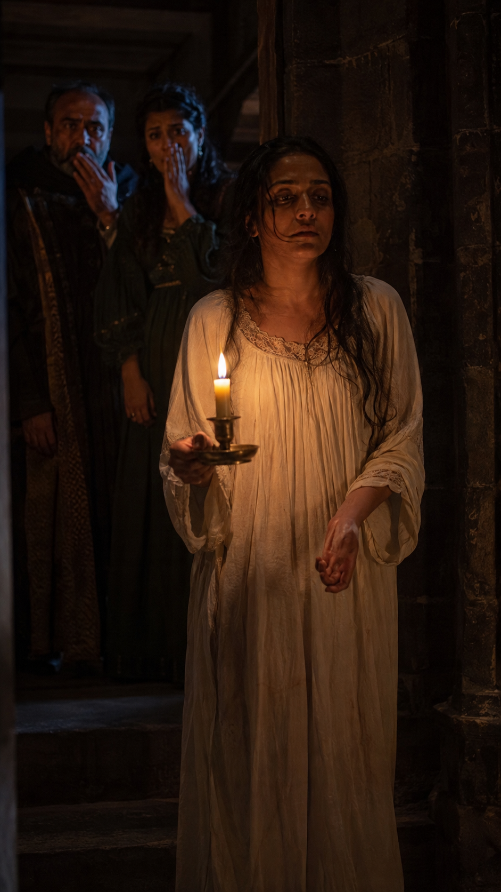
Macbeth
“Lady Macbeth: Out, damned spot! out, I say!” (Act V, Scene I)
A victorious general is met on a windswept moor by three witches who greet him with a title he doesn't yet hold and a prophecy that he'll be king. He mentions it to his wife, who immediately sees a shortcut where he still sees only a possibility, and together they murder their king while he's a guest under their own roof.
The crime works, but it doesn't bring the safety either expected — every subsequent murder, committed to protect the first one, makes them more paranoid and less able to sleep, not less. He starts seeing things no one else can see; she starts washing hands that were never actually dirty, undone by guilt her ambition never accounted for.
By the end he's a tyrant almost everyone in the country wants dead, still clinging to prophecies he's misread with fatal confidence, convinced he's untouchable right up until the exact moment he isn't. It's a story about how a small, private choice, made in the dark for entirely personal reasons, can metastasize into something neither person who made it can ever control again.
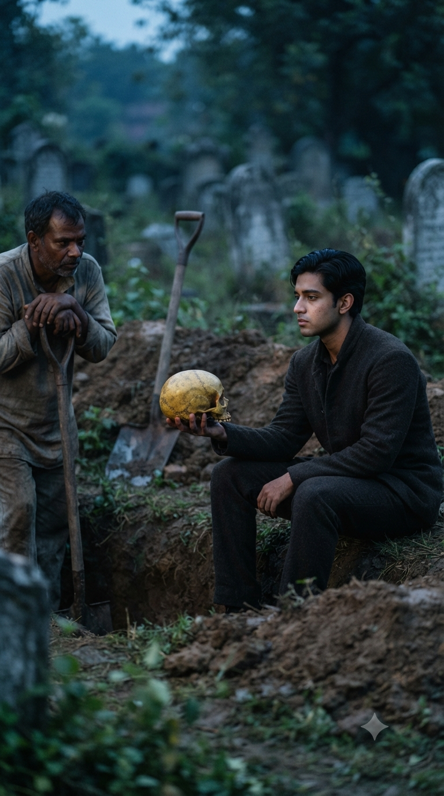
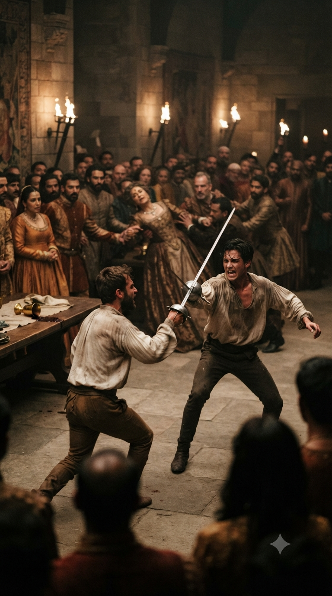
Hamlet
“Hamlet: To be, or not to be, that is the question.” (Act III, Scene I)
A prince returns home from university to find his father recently dead and his mother already remarried to his uncle, who has taken the crown that should have been his. His father's ghost soon appears, claiming he was actually murdered by that same uncle, and demanding revenge.
Rather than act immediately, the prince spends most of the play thinking, doubting, and testing the truth, staging a play designed to catch his uncle's guilty reaction and feigning madness to buy himself room to investigate. His hesitation has real consequences: a nobleman is killed by accident, the woman who loves him loses her mind and drowns, and her grieving brother becomes a second avenger racing toward the same target.
Everything collides in a final fencing match rigged with a poisoned blade and cup, and by the end nearly every major character is dead, including the prince himself, moments after he finally gets his revenge. It's less a story about whether revenge is right than about what happens to a mind that spends too long deciding, while the world outside keeps moving without waiting for an answer.
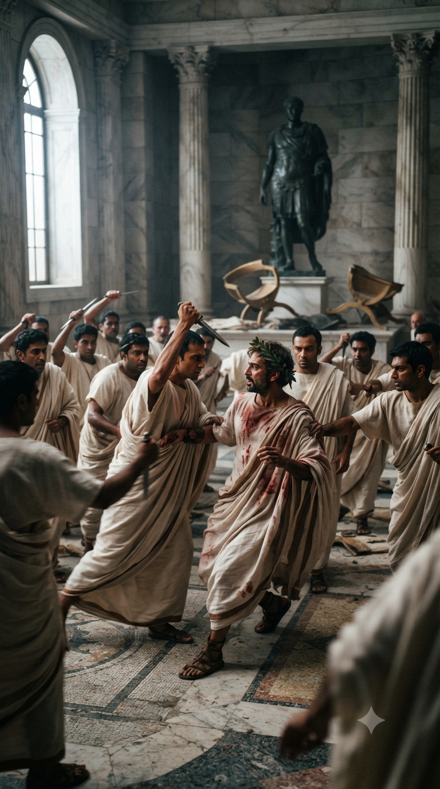
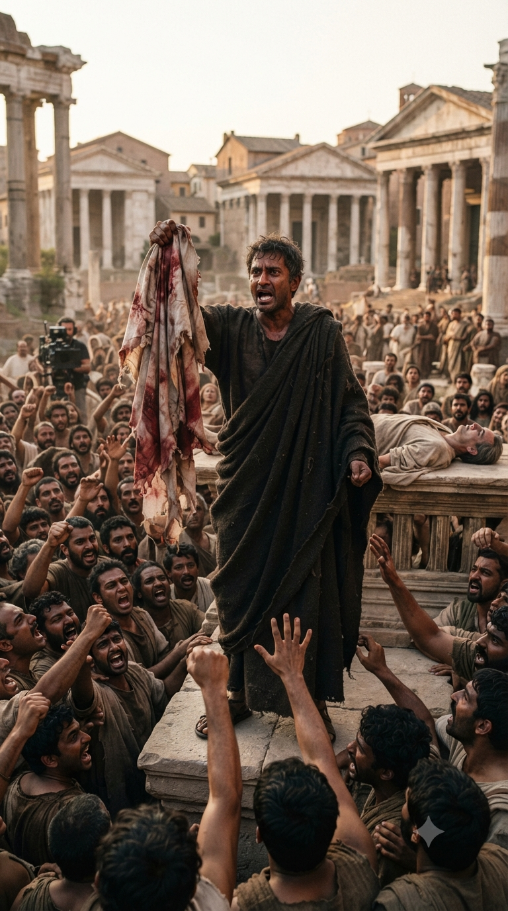
Julius Caesar
“Julius Caesar: Et tu, Brute? Then fall, Caesar!” (Act III, Scene I)
Rome's most powerful general is offered a crown in public and, despite performing reluctance for the crowd, seems increasingly comfortable with the idea of ruling alone. A group of senators, some genuinely afraid for the republic and some simply jealous of his power, convince a respected, principled friend of his to join a plot to kill him before he can become a king in anything but name.
That friend agonizes over the decision more than anyone else in the conspiracy, ultimately convincing himself that murdering a friend is the only way to save a republic he loves more than any person in it. They kill him on the floor of the Senate, and in his final moment he seems less afraid of the many blades than devastated that one particular friend was among them.
The conspirators expect gratitude from the public; instead, a fiery funeral speech by the dead man's ally turns the crowd violently against them within minutes. Rome doesn't get its restored republic — it gets a civil war and, eventually, exactly the kind of single ruler the assassination was meant to prevent.
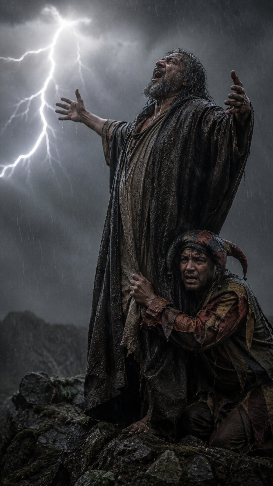
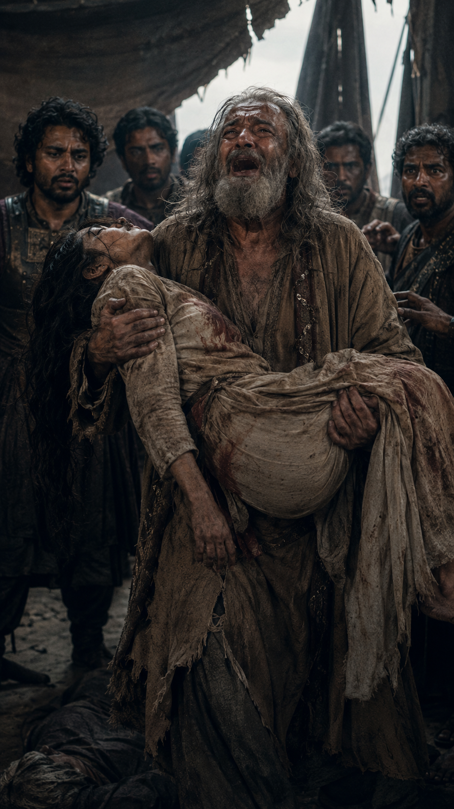
King Lear
“King Lear: Blow, winds, and crack your cheeks! rage! blow!” (Act III, Scene II)
An aging king decides to retire and divide his kingdom between his three daughters, but first demands each publicly declare how much they love him, treating affection like something that can be measured and rewarded. Two daughters flatter him extravagantly and are given their share; the third, who loves him most genuinely, refuses to perform her love for an audience and is disinherited on the spot for her honesty.
Once he's given away all his actual power, the two daughters who flattered him strip away his remaining dignity piece by piece, and he's turned out into a violent storm with nothing left but a loyal fool and his own unraveling mind. Wandering the storm-lashed countryside, stripped of crown and sanity, he starts, for the first time in his life, to actually notice what suffering looks like on people who were never kings.
His honest daughter returns with an army to save him, and for a brief moment father and daughter are reconciled — before she's killed anyway, and he carries her body onstage in a grief too large for words. It's one of the bleakest plays Shakespeare ever wrote, arguing that real love often looks unflattering, and that some lessons only arrive once it's far too late to use them.
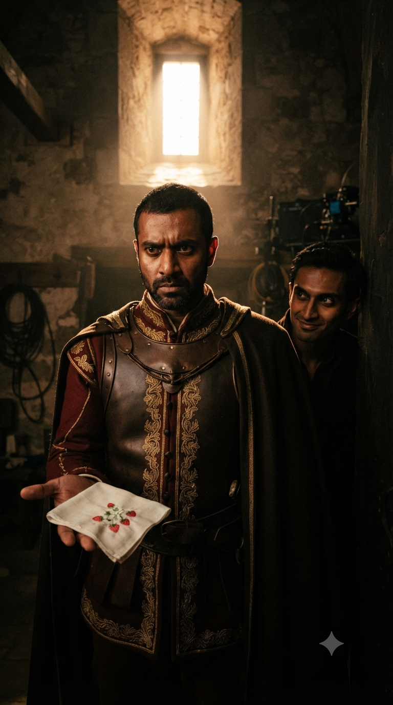
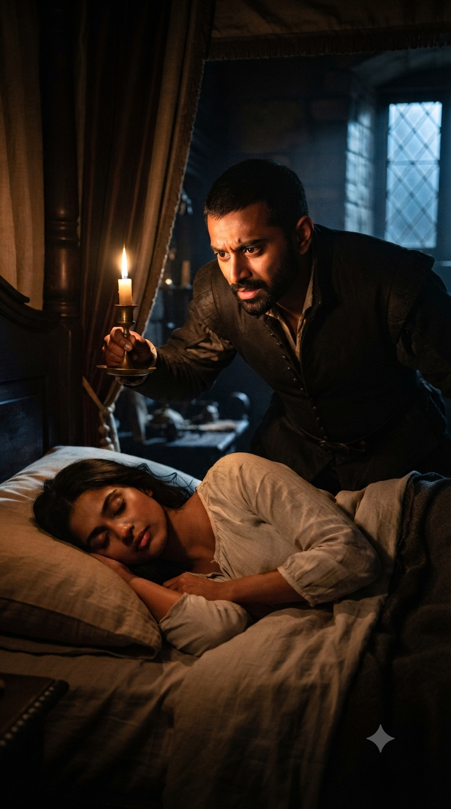
Othello
“Iago: It is the green-eyed monster which doth mock the meat it feeds on.” (Act III, Scene III)
A respected military general elopes with a senator's daughter, and their marriage seems genuinely happy — until a bitter subordinate, passed over for promotion, decides to destroy them both out of resentment. He never uses force, only suggestion: a dropped handkerchief, a half-finished sentence, a conversation glimpsed from a distance, each small enough to seem like nothing on its own.
The general, who trusts this man completely, becomes so convinced of his wife's betrayal that he can no longer see the evidence for what it actually is: nothing at all. Every attempt she makes to defend herself only looks, to his poisoned mind, like more proof of guilt.
He kills her with his own hands in their bed, and only afterward learns, seconds too late, that the entire case against her was invented from nothing. What makes it unbearable isn't a moment of villainy so much as a slow, patient exploitation of trust: the play argues that jealousy doesn't need real evidence, only someone willing to keep feeding it just enough to survive.
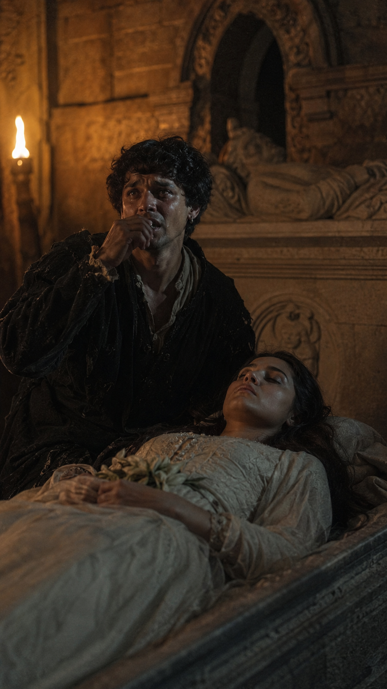
Romeo and Juliet
“Romeo: It is the east, and Juliet is the sun.” (Act II, Scene II)
Two teenagers from feuding families fall for each other within minutes of meeting at a party, and secretly marry the very next day, certain their love can outlast a hatred that's already lasted generations. Street violence between the two families escalates almost immediately, and the groom, trying to stop a fight, ends up killing his own new wife's cousin and is banished from the city for it.
Desperate to avoid a second, forced marriage her parents are arranging, the bride fakes her own death using a sleeping potion, with a plan for her husband to secretly meet her when she wakes and flee together. The message explaining the plan never reaches him in time.
Believing she's truly dead, he buys real poison and takes his own life at her tomb, moments before she wakes beside his body and, finding him gone, kills herself as well. Their deaths are what finally shame both families into ending a feud that neither side even remembers the real cause of — the play's harshest joke: it takes two children dying to accomplish what any adult could have chosen to do at any point, for free.
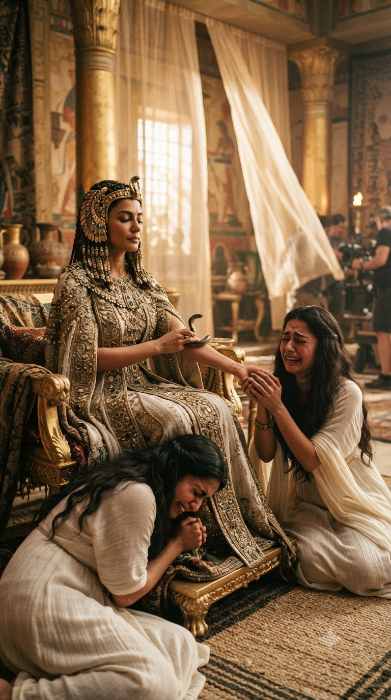
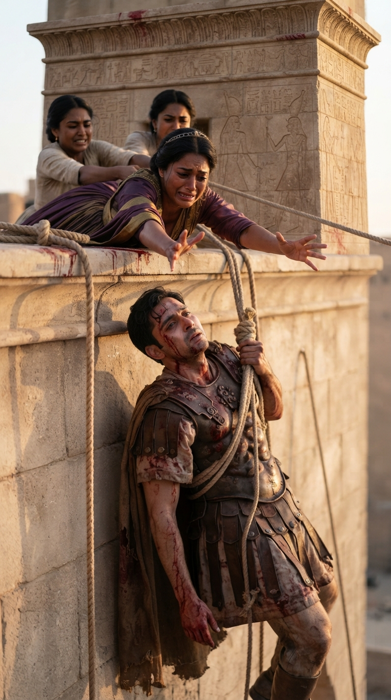
Antony and Cleopatra
“Cleopatra: I have immortal longings in me.” (Act V, Scene II)
A legendary Roman general falls so completely for an Egyptian queen that he starts making decisions based on passion instead of strategy, abandoning political alliances and military common sense to stay near her. His fellow rulers in Rome see this as weakness, and eventually the man he once shared power with turns against him outright, forcing a war neither their armies nor their romance can survive.
In the middle of a decisive naval battle, the queen's fleet suddenly retreats, and, inexplicably, he abandons his own winning position to chase after her ships instead, throwing away the war for her. Cornered and humiliated, he takes his own life on a false report of her death, only to be hauled up, dying, into her fortress to say goodbye in person after all.
She, refusing to be paraded as a captive back in Rome, chooses death on her own terms, dressing in her full royal splendor and letting a poisonous snake do what neither politics nor an empire ever could. It's less a tragedy of external fate than one of two enormous personalities who simply couldn't stop choosing each other, even when it cost them everything else they had.
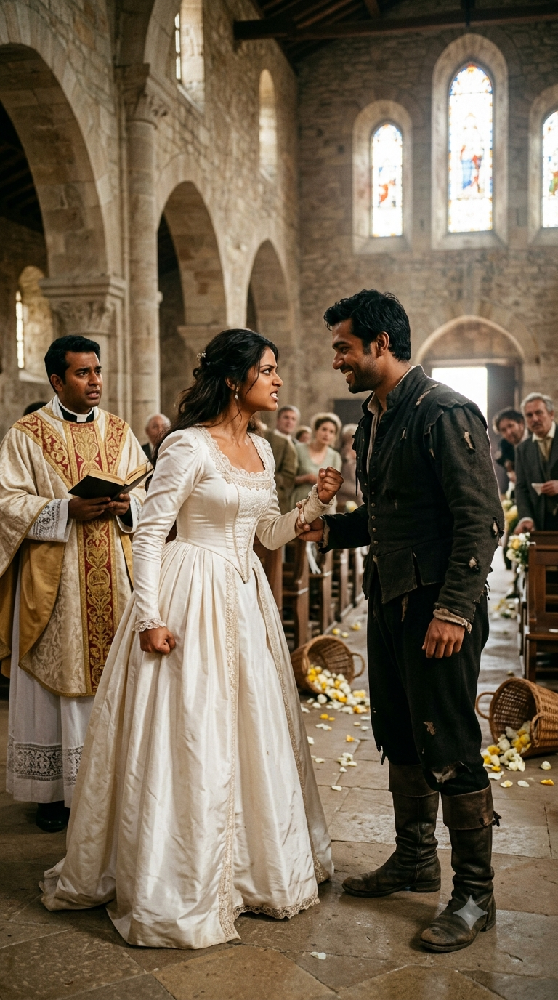
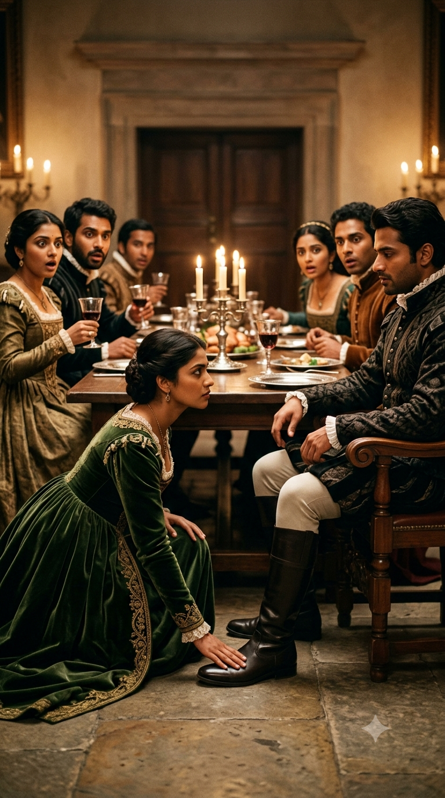
The Taming of the Shrew
“Petruchio: She is my goods, my chattels, she is my house, my household stuff, my field, my barn, my horse, my ox, my ass, my any thing.” (Act III, Scene II)
A father refuses to let his sweet, popular younger daughter marry until someone takes his older daughter off his hands first — a sharp-tongued woman every suitor in town is terrified of. A confident newcomer arrives specifically for her money, takes on the challenge as a kind of game, and hauls her away from their own wedding before the reception even starts, denying her food, sleep, and new clothes while insisting, with exaggerated devotion, that nothing is good enough for her.
By the end, she delivers a long speech to the other wives about a wife's duty to obey her husband, and wins her husband a bet by being the most "obedient" woman in the room. Whether she means a word of it is the question the play never quite answers, and different productions play it completely differently.
Read one way, it's a blunt, uncomfortable comedy about breaking a difficult woman into compliance. Read another, it's about two strong personalities who recognize a worthy opponent in each other. Four hundred years later, audiences still can't agree which version they just watched.
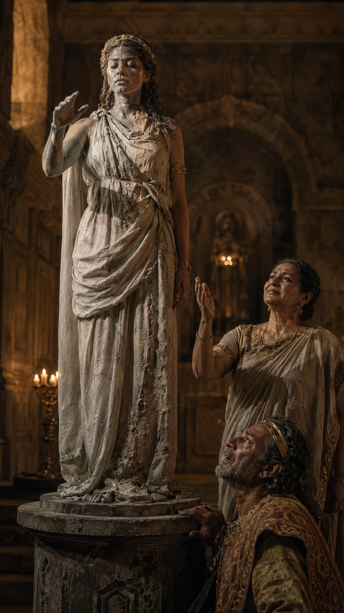
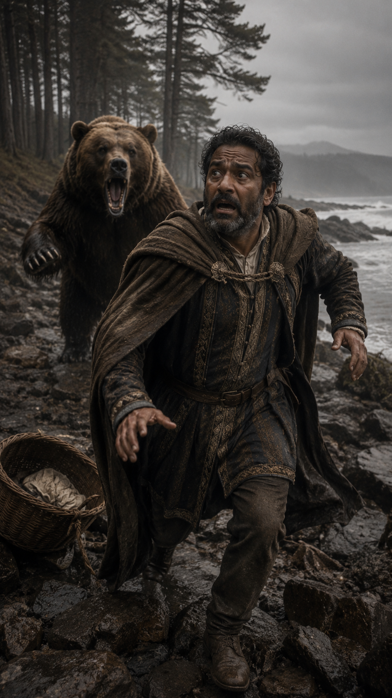
The Winter's Tale
“Paulina: 'Tis time; descend; be stone no more.” (Act V, Scene III)
A king becomes suddenly, irrationally convinced his pregnant wife has been unfaithful with his oldest friend, with no real evidence beyond his own spiraling jealousy. He has her imprisoned, orders their newborn daughter abandoned in the wilderness to die, and refuses every plea to reconsider, even after an oracle declares his wife innocent. Within moments of rejecting the oracle's word, his young son dies of grief and his wife is reported dead soon after.
The abandoned baby, against all odds, is found and raised by kind shepherds far away, growing up unaware of who she really is. Sixteen years pass before chance brings her back into her father's orbit, now grown and in love with a prince who happens to be the son of the king's oldest friend.
In the play's most famous turn, the king is led to what he's told is a stone statue of his long-dead wife — only for the statue to slowly move, breathe, and step down, alive after all these years. It's a play that swings wildly from tragedy to fairy tale, arguing that some damage can only be undone by something close to a miracle, and that time is often the only cure for a wound someone caused in an instant.
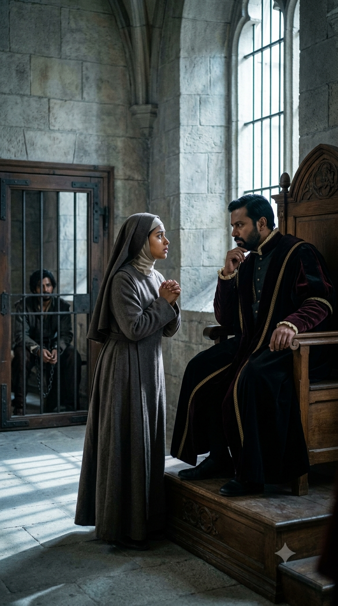
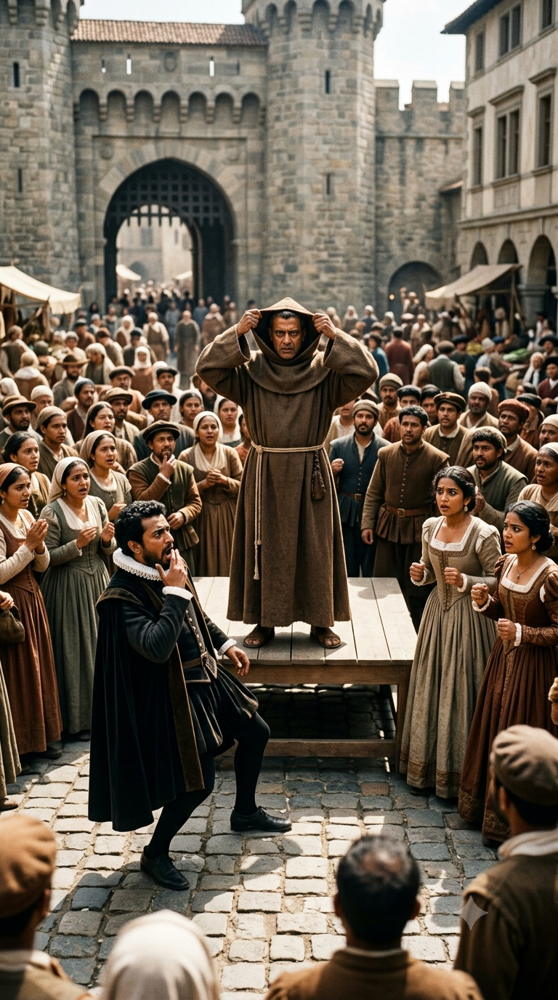
Measure for Measure
“Isabella: It is excellent to have a giant's strength, but it is tyrannous to use it like a giant.” (Act II, Scene II)
A duke secretly leaves his city in the hands of a strict deputy to enforce laws that have gone unenforced for years, then disguises himself as a friar to watch what happens. The deputy immediately sentences a young man to death for getting his fiancée pregnant before marriage, reviving an old law nobody expected to be used. The young man's sister, a novice about to join a convent, comes to beg for her brother's life.
The deputy is moved not to mercy but to lust, offering to spare her brother only if she sleeps with him — the very crime he's about to execute someone else for. She refuses, choosing her brother's death over her own violation, until the disguised duke secretly arranges a trick: another woman takes her place in the dark, and the deputy never realizes he's been deceived.
When the truth surfaces, the duke reveals himself and hands down judgments far gentler than the law the deputy tried to enforce. The whole play is an argument about the gap between the letter of the law and actual justice, and it leaves an uncomfortable question hanging: is mercy really virtue, or just another kind of power.
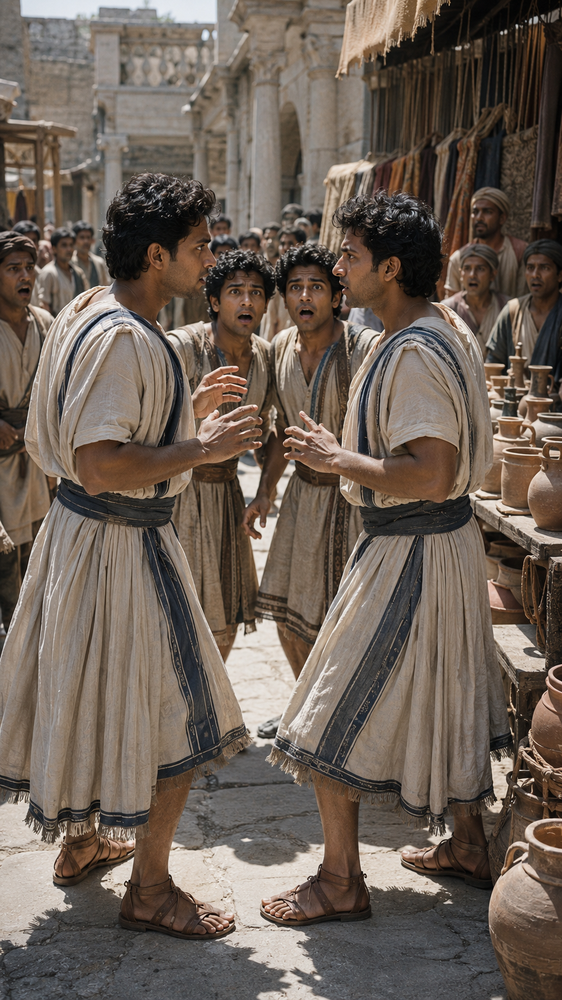
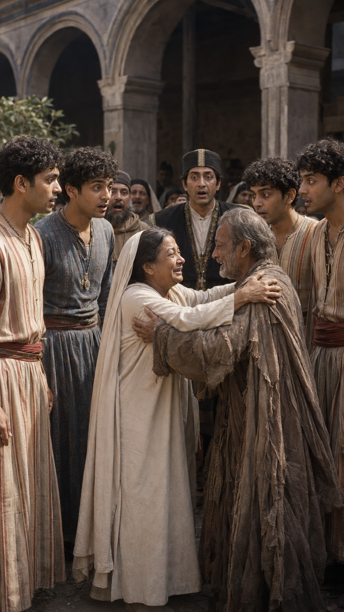
The Comedy of Errors
“Antipholus of Syracuse: Am I in earth, in heaven, or in hell?” (Act II, Scene II)
Two sets of identical twins, separated by a shipwreck in infancy, end up in the same city on the same day without knowing it. One twin from each pair has spent years searching for his lost brother; the other has lived there for years as a respected citizen, with a wife, a household, and a completely normal life. Neither has any idea a duplicate of himself is walking the same streets.
Strangers keep handing them the wrong gold, wives scold the wrong husbands, and dinner invitations go to the wrong guests, until every person in town becomes convinced the man in front of them has simply lost his mind. Nobody in the story is lying or scheming — the entire chaos runs purely on mistaken identity, which makes it funnier and stranger the longer it goes on, until a bewildered visitor is nearly dragged off as a lunatic by people utterly convinced they know exactly who he is.
It all resolves the instant the four men finally stand in the same room together, and the mystery evaporates on sight. Underneath the farce is a quietly unsettling question: how much of who we are is actually decided by the people who think they recognize us.
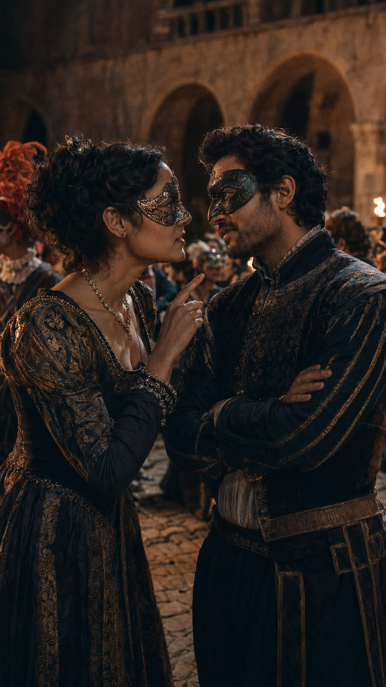
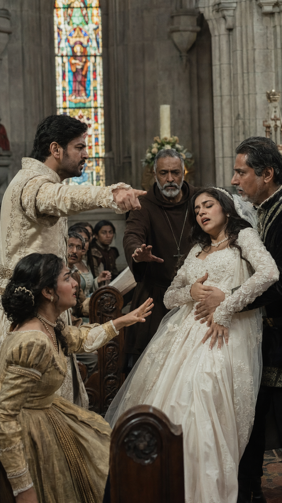
Much Ado About Nothing
“Beatrice: He is the prince's jester: a very dull fool.” (Act II, Scene I)
Soldiers returning from war settle in for a few weeks of leisure at a nobleman's estate, where one pair of old friends can't stop trading insults every time they're in the same room, both loudly insisting they'll never marry. Everyone around them stages an elaborate prank, letting each overhear a fake conversation about how desperately in love the other secretly is. It works instantly, and both fall for exactly the trick everyone expected.
Meanwhile a quieter, more conventional couple is heading toward marriage, until a jealous schemer frames the bride for infidelity the night before the wedding, using nothing but a staged scene glimpsed from a distance. The groom humiliates her publicly at the altar based on secondhand appearances, and she's declared dead of grief to buy time until the truth comes out.
The contrast is the whole point: the couple who argue constantly end up far more honest with each other than the couple who take everything at face value. It's a warning about how easily "evidence" can be staged, and how gossip, repeated with enough confidence, starts to feel like fact.
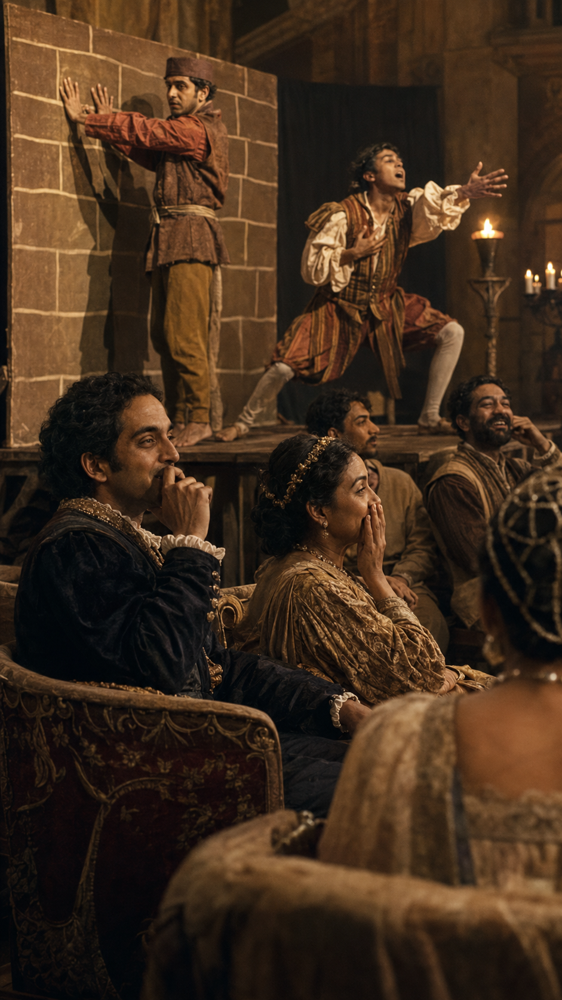
A Midsummer Night's Dream
“Puck: Lord, what fools these mortals be!” (Act III, Scene II)
Four young lovers flee into an enchanted forest to escape a father's demands and an unwanted arranged marriage, while a band of amateur actors sneaks into the same woods to rehearse a play in secret. Unseen by any of them, the king and queen of the fairies are in the middle of a bitter quarrel, and the king sends his mischievous servant to fetch a flower whose juice makes anyone fall in love with the first creature they see upon waking.
The spell gets applied to the wrong sleeping lover, then corrected, then applied again, until both young men are somehow in love with the same woman and the fairy queen herself wakes up adoring an actor whose head has just been magically turned into a donkey's. Nobody in the forest that night is in control of their own feelings, and nobody seems especially bothered once the sun comes up and the spell is finally lifted.
By morning, everyone assumes the whole episode was only a strange, shared dream, and the play never fully insists otherwise. It's a story about how thin the line is between love and enchantment, and how little either one has to do with reason.
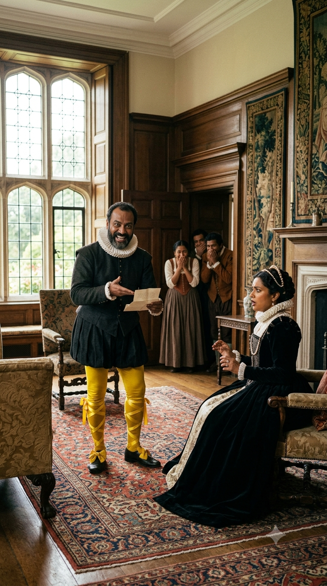
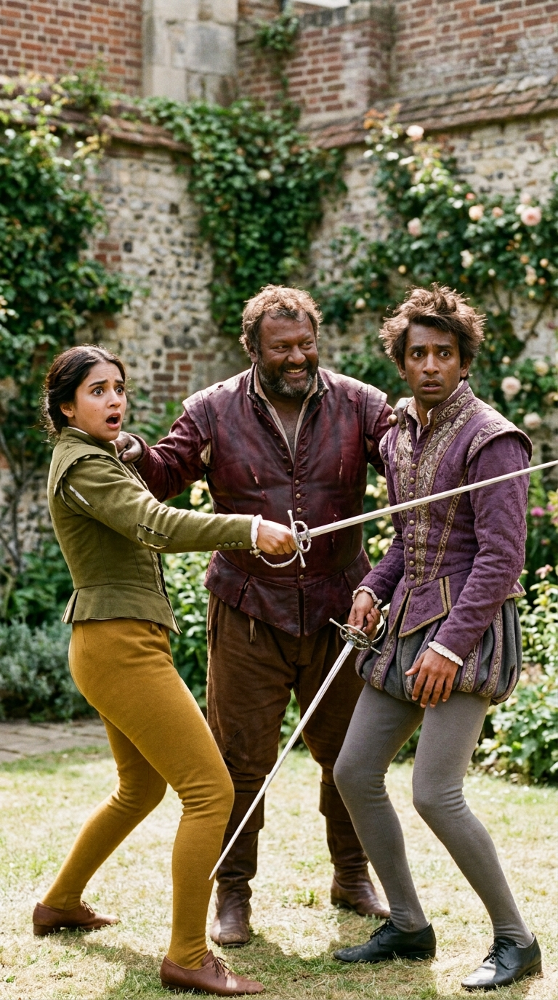
Twelfth Night
“Malvolio: Some are born great, some achieve greatness, and some have greatness thrust upon them.” (Act III, Scene IV)
A shipwrecked young woman, convinced her twin brother has drowned, disguises herself as a boy and takes a job serving a lovesick duke, who promptly falls for her without knowing she's a woman. He sends her to court a grieving countess on his behalf, and the countess falls instead for the messenger — still believing "he" is a young man. Nobody in this triangle is in love with who they think they're in love with.
Meanwhile, in the same house, a pompous, humorless steward is baited into believing his employer secretly loves him, through a forged letter left where he's sure to find it, and he makes an utter fool of himself acting on it in public. His prudishness made him an easy target, and the prank spirals further than anyone intended, tipping from funny into genuinely cruel.
The twin brother turns out to be alive after all, and his sudden arrival is the only thing that can untangle the mess of misdirected love. It's a comedy fascinated by how much of attraction is really about performance and mistaken signals, and how a joke, taken too far, stops being funny for the person on the receiving end.
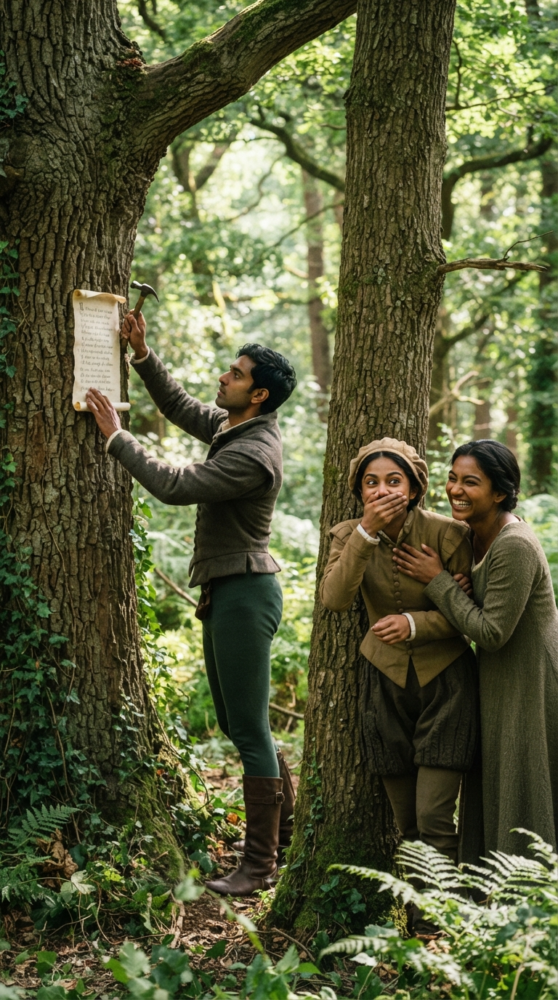
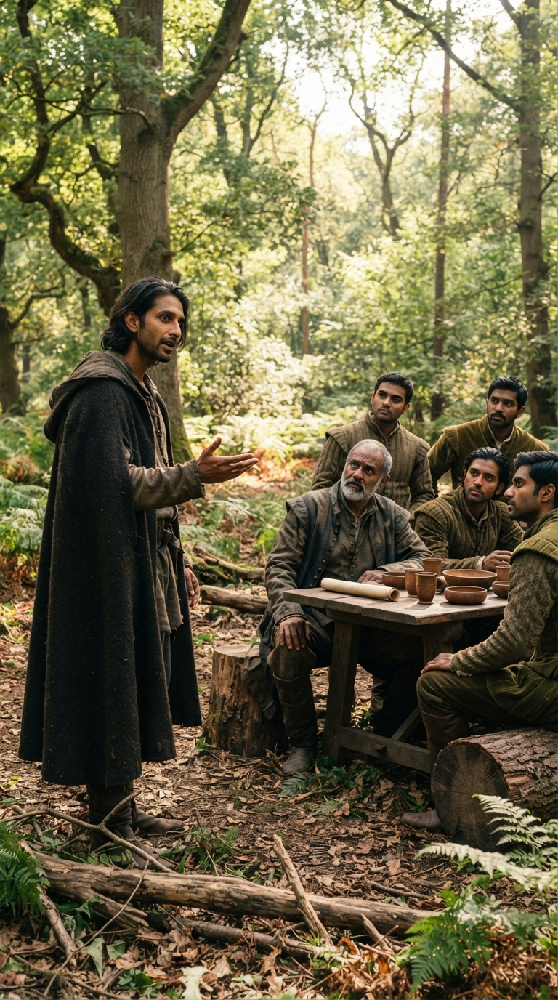
As You Like It
“Jaques: All the world's a stage, and all the men and women merely players.” (Act II, Scene VII)
Two brothers' feud gets a young man exiled into a forest, where a banished duke and his followers live happily off the land, having traded court politics for fresh air. His cousin, meanwhile, disguises herself as a boy and flees into the same forest after her uncle turns against her. There, still in disguise, she runs straight into the very man she's already fallen for.
She offers to "cure" his lovesickness by having him practice wooing her, while she's dressed as a boy pretending to be the woman he already loves. It works precisely because clothes, in this play, matter more than anyone expects. Around them, shepherds and courtiers debate what a good life looks like once ambition and title are stripped away, and one melancholy nobleman insists that every stage of a person's life is just another costume in a play everyone is performing.
The forest becomes a place where identity loosens just enough for people to be honest with each other while pretending to be someone else. It's a gentle argument that the mask we choose can sometimes get us closer to the truth than the face we started with.
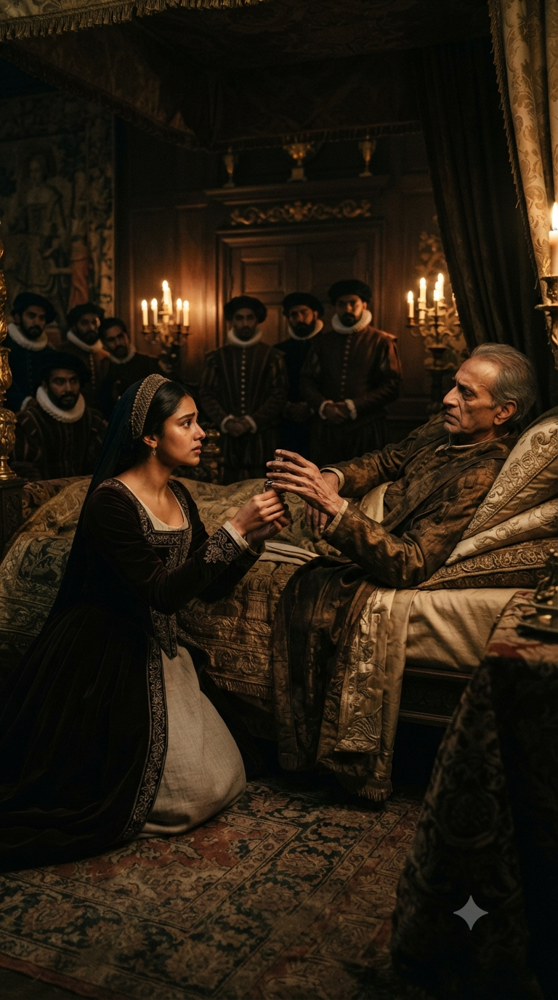
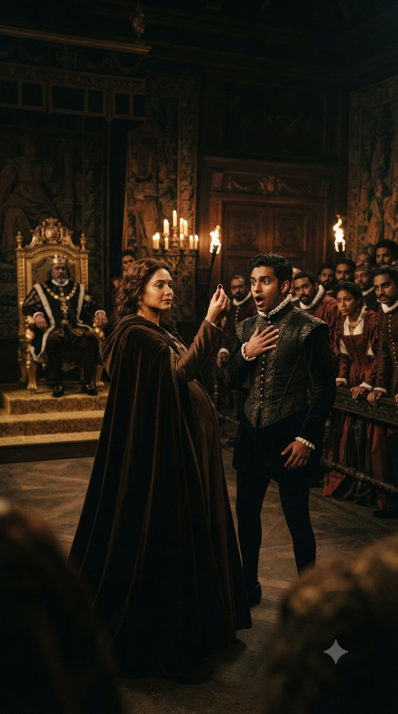
All's Well That Ends Well
“Countess: Love all, trust a few, do wrong to none.” (Act I, Scene I)
A poor but brilliant young woman is in love with a nobleman who considers her far beneath him. When the king falls gravely ill, she offers to cure him using a secret remedy inherited from her physician father, risking her own life if she fails. She succeeds, and asks for exactly one reward: the husband of her choosing.
She chooses the nobleman who scorns her, and the king forces the marriage — but her new husband abandons her the same day, declaring he'll only accept her once she gets his own ring off his finger and carries his child, both of which he assumes are impossible. Undeterred, she tracks him down in secret and, in the dark, quietly fulfills both conditions herself.
When the truth comes out, he has no argument left, and the marriage is sealed on terms she engineered from nothing. The play is less a romance than a study in persistence: what happens when someone refuses to let another person's low opinion decide their worth. It's also uncomfortable on purpose — a "happy ending" built on trickery and a husband who never really consents, which is exactly why the play still gets argued over today.
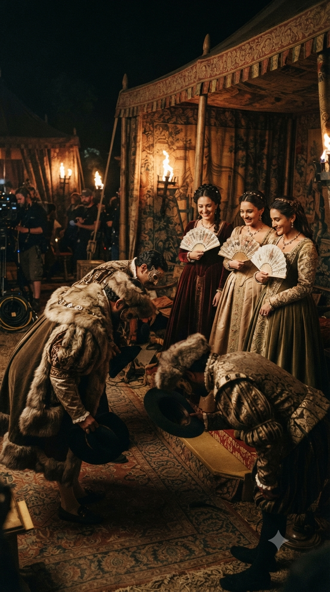
Love's Labour's Lost
“Berowne: Now step I forth to whip hypocrisy.” (Act IV, Scene III)
A king and three of his closest friends swear a solemn oath to give up food, sleep, and women for three years, so they can focus entirely on study. Almost immediately, a princess and her three witty companions arrive on royal business, and every one of the men falls hopelessly in love within days, each trying to hide it from the others.
One by one, each man is caught spying on the man before him, until all four are exposed in the same garden, each having broken the exact vow he swore to keep. Rather than punish each other, they simply admit the obvious: no oath survives contact with an actual person worth loving. They attempt an absurd, over-elaborate disguised courtship, only to be outsmarted by the women, who see through the costumes immediately.
Just as the couples seem headed for a tidy happy ending, news arrives that the princess's father has died, and every romance is abruptly put on hold for a year of mourning. It's Shakespeare deliberately refusing the fairy-tale finish, as if to say real feelings, unlike vows, can't be resolved on schedule.
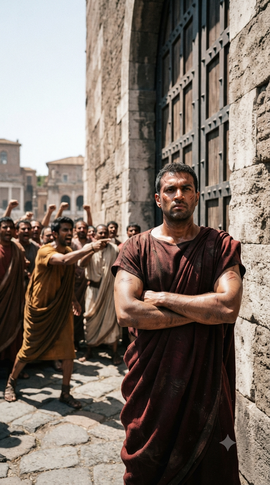
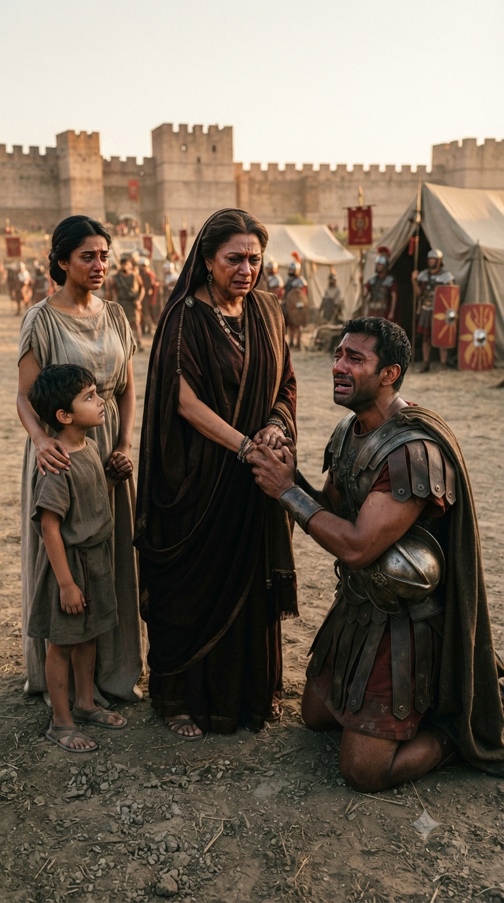
Coriolanus
“Coriolanus: I banish you!” (Act III, Scene III)
A brilliant Roman general wins the city's greatest military victory almost single-handedly, but he's constitutionally incapable of the one thing Roman politics also requires of him: pretending to like ordinary people. Pressured into seeking the city's highest office, he's expected to publicly display his battle wounds and beg the common citizens for their votes, a ritual he finds nauseating and can barely fake.
His enemies exploit his contempt perfectly, provoking him into an open, furious tirade against the idea that commoners deserve any say in how Rome is run, and the city banishes the same man they'd been celebrating as a hero days earlier. Humiliated and enraged, he does the unthinkable: he joins Rome's oldest enemies and marches back to destroy the city that rejected him.
Only his own mother, walking out to beg him to stop, can finally reach the one part of him that pride never fully hardened, and he calls off the invasion knowing it will likely cost him his own life. It's a study of a man magnificent at exactly one thing, and a society that has no idea what to do with him the rest of the time.
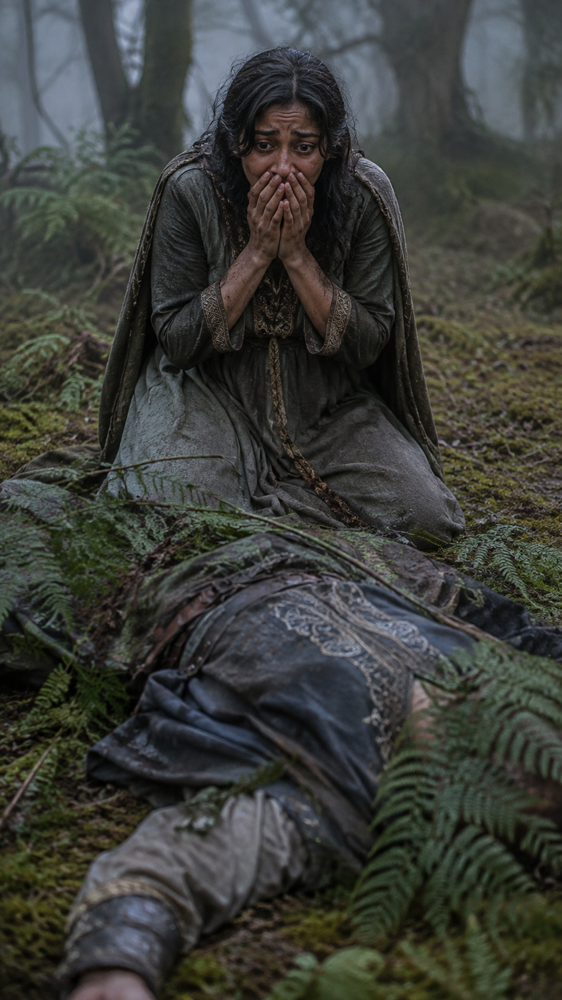
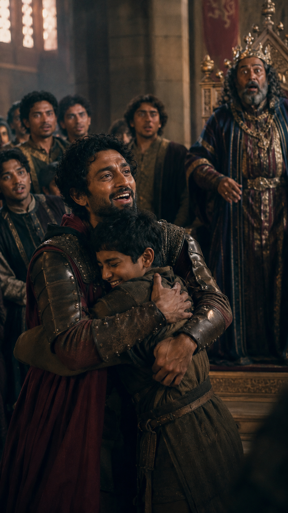
Cymbeline
“Guiderius: Fear no more the heat o' the sun, nor the furious winter's rages.” (Act IV, Scene II)
A princess secretly marries a commoner against her father's wishes, and he's banished for it, leaving the country brokenhearted but faithful. Abroad, a bragging stranger bets her exiled husband that he can seduce his new wife within weeks — and when she refuses him completely, he fakes the proof anyway, describing her bedroom in convincing enough detail to make her husband believe he's lost the bet, and her.
Believing she's betrayed him, the husband orders her killed, but the servant tasked with it can't go through with it and helps her escape disguised as a boy. Disguised and alone, she stumbles into a cave inhabited by two young men who turn out, unknown to any of them yet, to be her own long-lost brothers.
After more mistaken identities, a poisoning that turns out not to be fatal, and a headless body she mistakes for her husband's, the whole tangled family is finally reunited in one overflowing final scene of recognition and forgiveness. It's Shakespeare piling nearly every trick from his other plays into one story, as if to prove no misunderstanding is too tangled for the truth to eventually untie.
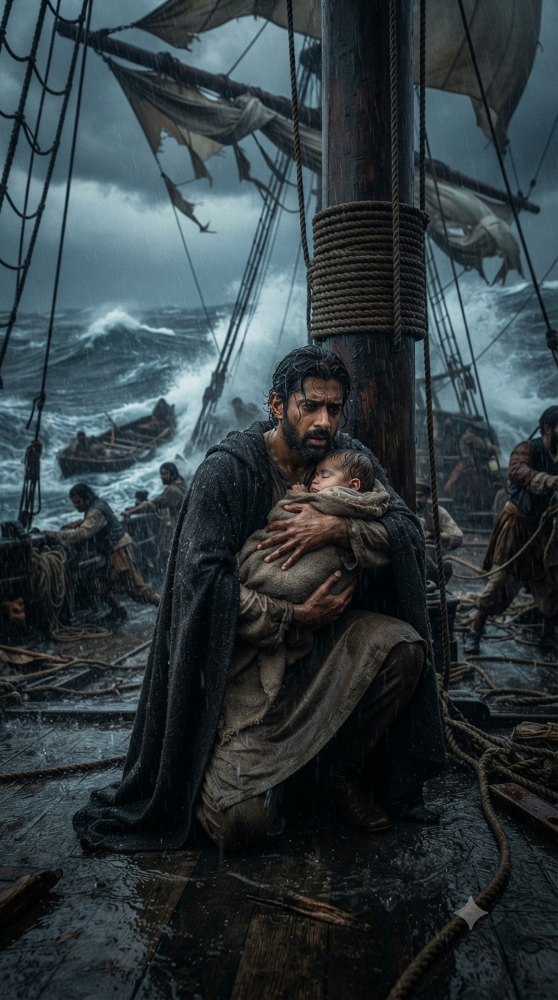
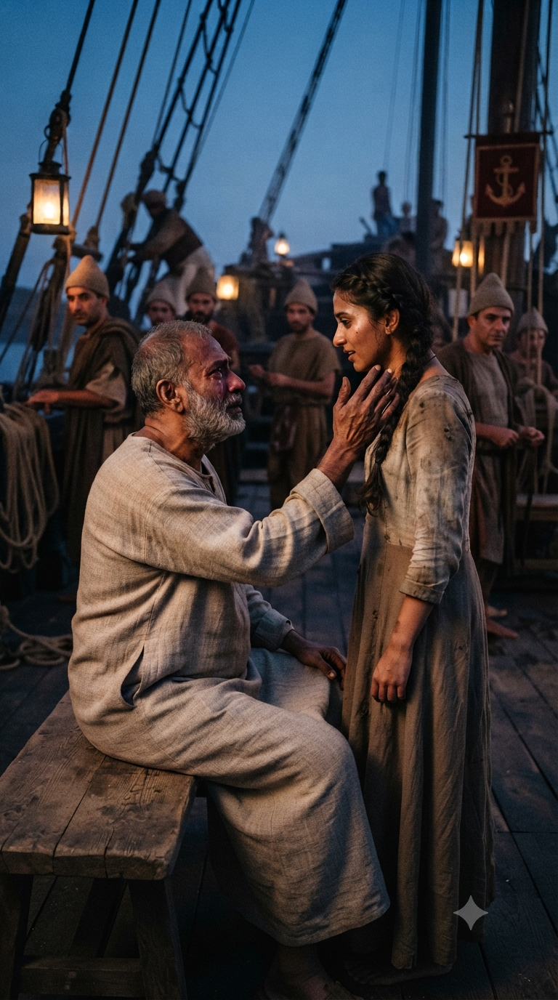
Pericles, Prince of Tyre
“Pericles: Now, mild may be thy life! for a more blusterous birth had never babe.” (Act III, Scene I)
A prince flees his own homeland after uncovering a king's terrible secret, and spends years afterward drifting from disaster to disaster, as if the universe won't let him settle anywhere for long. He wins a wife through a tournament, only for a storm at sea to apparently kill her during childbirth, forcing him to bury her at sea and hand his newborn daughter to strangers to raise while he wanders on alone.
Years later he learns his daughter has died too, and sinks into a silent grief so total he stops speaking to anyone — only to be brought a young singer meant to cheer him up, who turns out, through a slow, disbelieving conversation, to be the very daughter he thought was dead. His wife, it turns out, also survived her own apparent death and has been living as a priestess in a temple all along, and the family is reunited in one of Shakespeare's most moving recognition scenes.
The plot leans hard on coincidence and fate, more fairy tale than realism, but that's rather the point: it's a story about holding on through decades of loss on nothing but the stubborn refusal to fully believe the people you love are really gone.
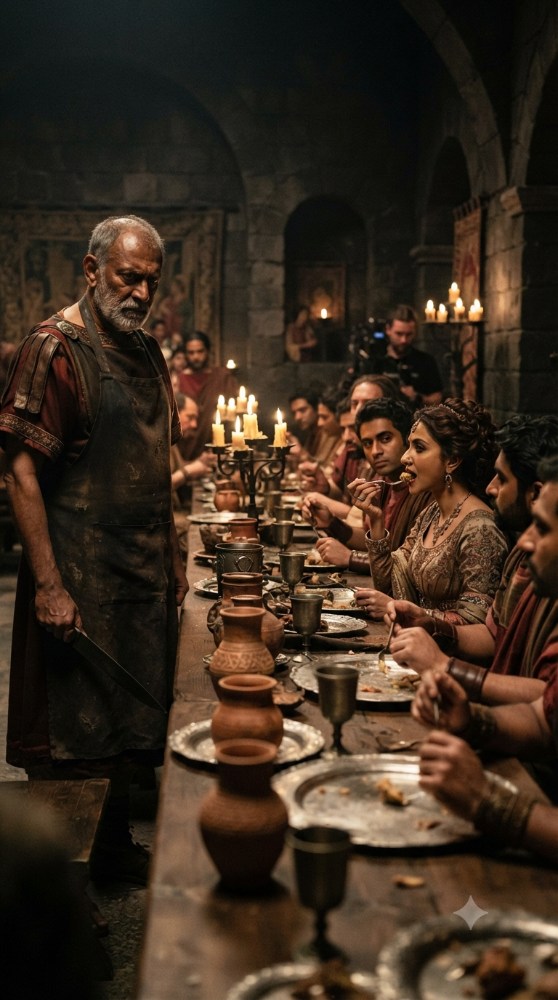
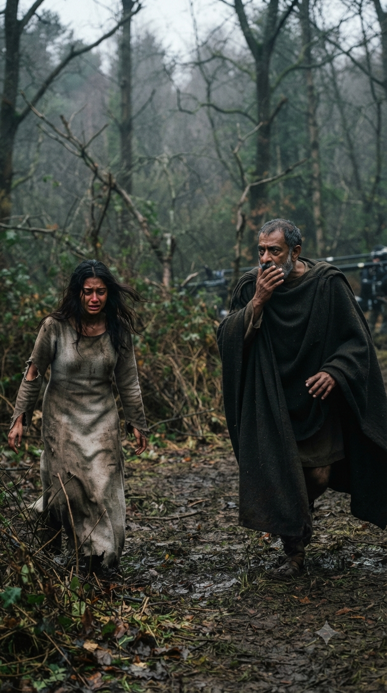
Titus Andronicus
“Titus: Why, there they are both, baked in that pie, whereof their mother daintily hath fed.” (Act V, Scene III)
A Roman general returns from war a hero, but his early decisions set off a horrifying chain reaction: he executes a captured queen's eldest son as a ritual sacrifice, and she vows revenge on his entire family the moment she gains any power of her own. She soon marries the new Roman emperor, giving her exactly the position she needs to make good on that promise.
Her surviving sons murder the general's son-in-law, rape his daughter, and mutilate her so she can never name them. From there the violence only escalates on both sides, each family answering the last atrocity with something worse, until cruelty stops shocking anyone in the story and starts to feel almost procedural.
The general finally gets his revenge in the most literal way imaginable, killing the queen's remaining sons and secretly baking them into a pie he serves to their own mother at a banquet, revealing the truth only after she's already eaten. It's Shakespeare's earliest and bloodiest tragedy, showing, relentlessly, what happens when revenge is treated as a family inheritance passed down without end.
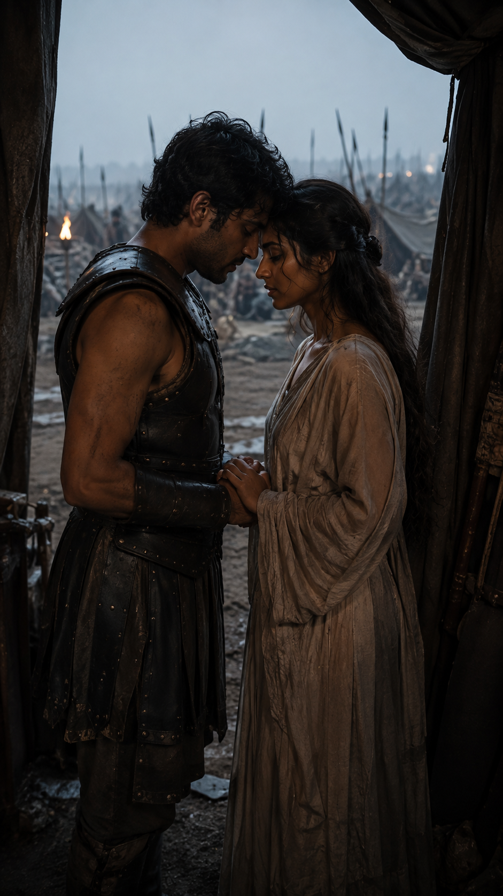
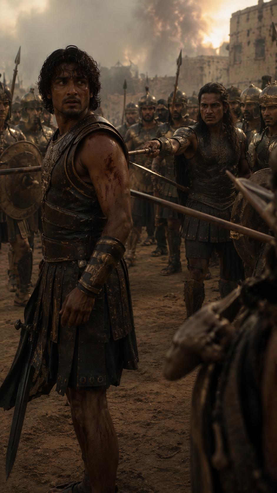
Troilus and Cressida
“Troilus: Be thou but true of heart.” (Act IV, Scene IV)
In the middle of the long, grinding Trojan War, a young Trojan prince falls for a woman inside the same city, and after much hesitation the two finally become lovers with the help of her scheming uncle. Almost immediately, a prisoner exchange forces her to leave Troy for the Greek camp, separating the couple within a day of finally being together, with nothing but a vow of faithfulness between them.
In the Greek camp she's surrounded by soldiers who treat her arrival as an event to be won rather than a person to be respected, and within a short time she's taken a new Greek lover, watched from hiding by her heartbroken original partner. Meanwhile the war itself grinds on with equal cynicism: the greatest Greek warrior sulks in his tent over wounded pride, and when he finally returns to battle, he has his own soldiers ambush and kill the Trojans' best fighter unarmed.
Nothing in the play resolves the way heroic legend says it should — love turns out to be unreliable, honor turns out to be mostly performance, and the war just continues without any real winner in sight. It's Shakespeare deliberately souring one of history's most romanticized stories, insisting that behind famous legends there's usually just tired, petty, self-interested people.
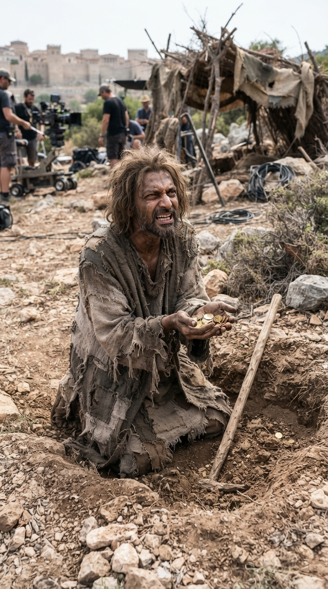
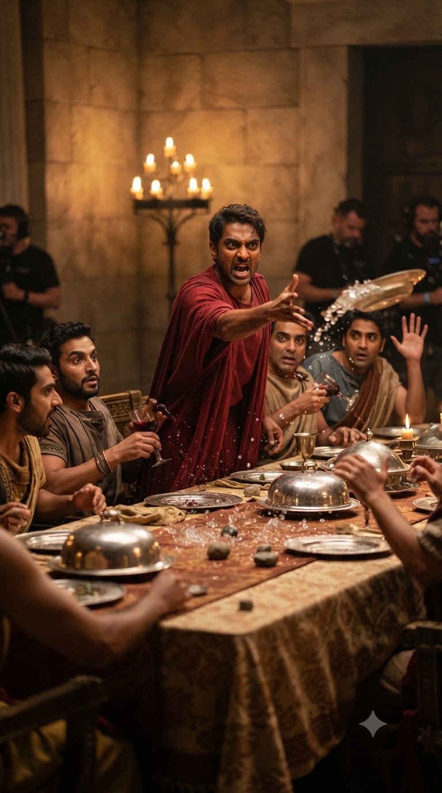
Timon of Athens
“Timon: Gold? Yellow, glittering, precious gold?” (Act IV, Scene III)
A wealthy nobleman spends his entire fortune on lavish gifts and favors for his friends, believing generosity itself is a kind of wealth that will always be repaid in kind. When his money finally runs out and creditors start circling, he sends desperate requests for help to every friend he's ever supported — and every single one of them finds a reason to refuse him.
Enraged, he invites them all to one final banquet, serving covered dishes that turn out to contain nothing but warm water and stones, which he hurls at them before abandoning the city entirely to live alone in a cave. Digging in the dirt for edible roots, he instead finds a hoard of buried gold, the very thing that caused all of this, and reacts with pure disgust rather than relief, giving it away to strangers instead of using it to rebuild his old life.
He dies alone, unreconciled with the city or the friends who abandoned him, having swung from reckless generosity to total misanthropy without ever finding anything resembling balance in between. It's a bitter, underrated play about how quickly love that's really just financial dependency evaporates the instant the money stops flowing.
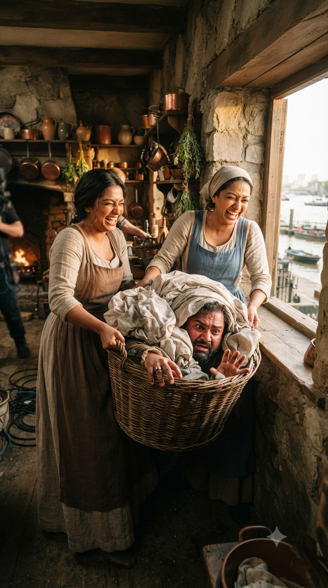
The Merry Wives of Windsor
“Falstaff: Have I lived to be carried in a basket, and to be thrown in the Thames like a barrow of butcher's offal?” (Act III, Scene V)
An aging, broke knight decides the fastest way to refill his purse is to seduce two married women at once, sending them identical love letters as if neither would ever compare notes. The women find out immediately, are more amused than flattered, and decide to string him along purely to humiliate him. Their husbands get pulled into the scheme too, one so consumed by jealousy he disguises himself just to spy on his own wife.
The women hide the knight in a laundry basket and have it dumped straight into the river, lure him back for a second round dressed as a woman and beaten as an impostor, and finally trick him into a midnight forest meeting where local children, dressed as fairies, pinch and torment him until he confesses everything. Every humiliation is his own fault, engineered entirely by the women he underestimated.
It's one of Shakespeare's few plays set among ordinary townspeople rather than kings or courts, and its real subject is how easily a certain kind of man mistakes other people's patience for stupidity. The women are never in real danger for a moment; they're simply better at this game than he is.
The Two Gentlemen of Verona
“Valentine: All that was mine in Silvia I give thee.” (Act V, Scene IV)
Two lifelong best friends part ways when one leaves home and immediately falls in love, while the other swears he has no interest in romance — right before falling for the same feeling himself the moment he's sent away to join his friend. Once reunited, the friend who once mocked love now finds himself desperately in love with his own best friend's fiancée, and decides to betray him completely, exposing his friend's escape plan to her disapproving father and trying to woo her himself.
When she refuses him and flees into a forest to find her real love, he corners her alone and is only stopped from assaulting her by his best friend suddenly stepping out of hiding. The betrayed friend forgives him almost instantly and, in the play's most debated single line, even offers to hand his own fiancée over to the man who just betrayed and menaced her.
It's one of Shakespeare's earliest plays, and it shows — the ending resolves so fast and so strangely that audiences have argued for centuries about whether to take it at face value. What it does capture, awkwardly and honestly, is how young friendship and young love can curdle into rivalry with almost no warning at all.
Richard II
“John of Gaunt: This royal throne of kings, this scepter'd isle, this earth of majesty, this seat of Mars, this other Eden, demi-paradise.” (Act II, Scene I)
A king utterly convinced his crown is untouchable, granted directly by God rather than earned through competence, spends the kingdom's money carelessly and seizes a banished nobleman's inheritance the moment it's convenient. That nobleman returns from exile with an army, and the king's support collapses so completely, so fast, that the crown is essentially handed to him anyway.
Forced to formally surrender his kingship in public, the king turns the ceremony into theater, calling for a mirror to study his own face and asking, almost sincerely, whether the man losing everything before them is even the same person he used to be. He smashes the mirror rather than accept what it shows him.
Imprisoned and now powerless, he has nothing left to do but think, and his prison soliloquies are some of the most searching self-examinations in all of Shakespeare. He's killed quietly in his cell not long after, and the new king who now wears his crown will spend his own reign haunted by how easily it was taken.
Richard III
“Richard III: A horse! a horse! my kingdom for a horse!” (Act V, Scene IV)
A physically disabled, ferociously ambitious prince decides early on that if the world already assumes the worst of him, he might as well earn it, and sets out to seize the throne through a methodical, almost gleeful campaign of manipulation and murder. He talks a grieving widow into marrying him over her own husband's coffin, turns brother against brother, and has two young princes, his own nephews, quietly killed in the tower where he's supposedly protecting them.
He confides constantly in the audience directly, letting us in on every scheme in advance, which somehow makes watching him get away with it both horrifying and darkly entertaining. Once he finally has the crown, the same ruthlessness that got him there starts turning on him: allies abandon him, guilt finally catches up in nightmares the night before his final battle.
He goes into that battle already half-defeated in spirit, reduced to begging for the one ordinary thing that might save him, and dies having proven a throne built entirely on fear collapses the moment enough people stop being afraid.
Henry IV, Part 1
“Falstaff (as Hal): Banish plump Jack, and banish all the world.” (Act II, Scene IV)
A king who seized the throne through rebellion now worries his own son is throwing his future away, spending his nights drinking and joking in taverns with a fat, funny, thoroughly dishonest old knight instead of preparing to rule. The son seems to confirm every fear, happily trading insults and petty schemes with his disreputable friend, seemingly uninterested in his own destiny.
What nobody realizes is that he's doing this on purpose, deliberately building a reputation so low that his eventual transformation into a great king will look even more astonishing by contrast. When a rebellion threatens to tear the kingdom apart, led by a brilliant, hot-tempered young rival his own age, the prince finally steps forward, defeats his rival in single combat, and saves his father's crown.
His old drinking companion survives the same battle mostly by faking his own death and later lying about the kill to claim credit. The play is really about the cost of becoming a leader: how much of yourself, including people who genuinely love you, you might have to discard to become who you're meant to be.
Henry IV, Part 2
“King Henry IV: Uneasy lies the head that wears a crown.” (Act III, Scene I)
As the old king's health collapses, his son visits his deathbed, only to find him finally, deeply asleep, with the crown resting beside him on the pillow. Assuming his father has already died, the prince quietly takes the crown, sets it on his own head, and walks out to grieve alone — only for his father to wake up and find him gone, along with the crown.
Furious and hurt, the dying king accuses his son of impatience for power, of wishing him dead so he could rule sooner. The prince returns, and in a raw, unguarded conversation, convinces his father it's the crown's weight, not its glamour, that he actually feels.
Once he's finally crowned in his own right, the new king turns to his old drinking companions expecting celebration, but instead delivers a cold, public rejection of the friend who once meant everything to him. It's one of Shakespeare's most quietly brutal scenes: the price of a crown paid not in battle, but in the deliberate abandonment of the people who knew you before you had to become someone else.
Henry V
“Henry V: We few, we happy few, we band of brothers.” (Act IV, Scene III)
The same young prince once known for tavern brawls and petty pranks is now king, and he stakes his entire reign on a risky invasion of France, claiming an ancient right to the French crown. His army arrives exhausted, outnumbered, sick, and far from home, facing a French force many times its size on the morning of a battle nobody expects the English to survive.
Rather than hide his army's odds, the king walks among his own soldiers in disguise the night before, listening honestly to their fear, then stands before them at dawn and reframes their disadvantage as an honor: fewer men means a larger share of glory for whoever survives. Against every expectation, they win decisively.
Off the battlefield, the same king who commanded an army now clumsily, almost shyly, courts a foreign princess he can barely speak the language of, trying to secure peace through marriage instead of another war. It's a portrait of leadership built on the idea that people don't follow triumph, they follow someone willing to stand exactly where they're standing.
Henry VI, Part 1
“Joan la Pucelle: Assign'd am I to be the English scourge.” (Act I, Scene II)
With the great English king who once conquered half of France now dead, his generals squabble over strategy while the war they inherited slowly slips away from them. Out of nowhere, a peasant girl claiming visions from heaven convinces the French court she's been chosen to save their country, and leads their demoralized army to a string of stunning victories the English can't explain.
The English, unable to accept defeat at the hands of a woman they refuse to see as anything but a witch, eventually capture her and burn her at the stake. Meanwhile, back in England, noblemen bicker in a garden over a private grudge, casually plucking red and white roses to mark opposing sides, planting the seed of a civil war that will consume the country for decades.
The battlefield triumphs mean little in the end, since the same English lords who won the war can't stop fighting each other once there's no shared enemy left. It's less a story of good versus evil than a study in how quickly unity dissolves the moment outside pressure disappears.
Henry VI, Part 2
“Dick the Butcher: The first thing we do, let's kill all the lawyers.” (Act IV, Scene II)
A weak, well-meaning king struggles to hold his court together while ambitious nobles circle him, each convinced the crown would be safer in their own hands. A minor argument between two lords spirals, almost by accident, into each plucking a rose from a garden bush — one white, one red — and every other noble in earshot is forced to pick a side on the spot.
What began as a petty dispute hardens overnight into two rival factions who will spend the rest of the play, and several more plays after it, trying to destroy each other. The king's own uncle, the one adviser genuinely trying to protect him, is murdered in his bed by rivals who fear his integrity more than any enemy's army.
A popular uprising briefly threatens to burn the whole rotten system down, promising ordinary people a world without lords, before it's crushed and order of a sort is restored. The play is a slow-motion picture of a kingdom talking itself into a war nobody actually wants, one small grudge at a time.
Henry VI, Part 3
“York: O tiger's heart wrapp'd in a woman's hide!” (Act I, Scene IV)
The civil war that began with a plucked rose has become an all-out war for the throne itself, with the crown changing hands violently, sometimes more than once in a single battle. One side's leader is captured, mocked with a paper crown, and murdered by the enemy queen while his own small son's death is thrown in his face moments beforehand.
On the same battlefields, soldiers stumble across bodies mid-fight only to discover, too late, that they've killed their own father or son without recognizing them, while the gentle, powerless king watches from a nearby hill, wishing he could trade places with any peasant shepherd. Loyalty shifts constantly, brothers turn on brothers, and the throne is treated less like a sacred duty and more like a prize anyone strong enough can simply seize.
By the end, a new king sits secured on the throne through sheer ruthlessness, while his own younger brother, twisted with ambition, quietly plots his own rise, promising the audience directly that far worse is still coming. It's a bleak, exhausting portrait of what happens once violence becomes the only accepted way to settle a disagreement.
Henry VIII
“Wolsey: Farewell, a long farewell, to all my greatness!” (Act III, Scene II)
A powerful cardinal all but runs the kingdom from behind the throne, accumulating wealth and influence far beyond what any adviser should hold, while the king remains mostly a spectator to his own court's politics. When the king decides to divorce his queen of many years to marry a younger woman at court, the cardinal secretly works against the divorce he's publicly pretending to support.
His duplicity is exposed almost by accident, when a private letter meant for the Pope is delivered to the king by mistake. Stripped of every title and shred of power in a single stroke, the cardinal is left alone to reflect, for the first time in his life, on how completely he had confused proximity to power with actually possessing it.
The king gets his new marriage and new queen, whose coronation the play closes on as a moment of hope. Underneath the pageantry is a simple, repeated lesson: everyone in this court who climbs by serving power alone eventually discovers how little that power actually owed them.
King John
“Arthur: Is there no remedy?” (Act IV, Scene I)
A king who took the throne on shaky legal grounds spends the entire play defending it against a young nephew with an arguably stronger claim, backed by France and by much of his own uncertain nobility. Rather than risk his nephew growing into a real threat, the king quietly orders the boy's own jailer to blind him, hoping to make him unfit to rule without the added scandal of an outright murder.
The jailer, facing a terrified child instead of an abstract political problem, can't go through with it and spares him — but the boy dies anyway soon after, in a desperate escape attempt, leaping from a castle wall. His death, meant to remove a threat quietly, instead turns even the king's own supporters against him.
Betrayed by allies, poisoned by a monk, and dying without ever having secured the throne he schemed so hard to protect, the king discovers that cruelty aimed at silencing a problem often just publicizes it instead. The whole play argues that legitimacy earned through cruelty is no legitimacy at all.
Dr. Samudra Dasgupta
- PhD in Data Science & Quantum Computing — University of Tennessee
- Master of Science in Engineering Sciences — Harvard University (Graduate Student Fellowship)
- B.Tech (Hons.) in Electronics & Electrical Communication Engineering — IIT Kharagpur (CGPA 9.18/10)
- MBA — Indian School of Business (Young Leader Award)
- CFA (Chartered Financial Analyst)

You've seen what these stories can teach. Now find your own voice.
Contact Dr. Samudra Dasgupta directly
Setup a virtual meetingLearn English · Debate · Creative Writing · Impromptu Speech